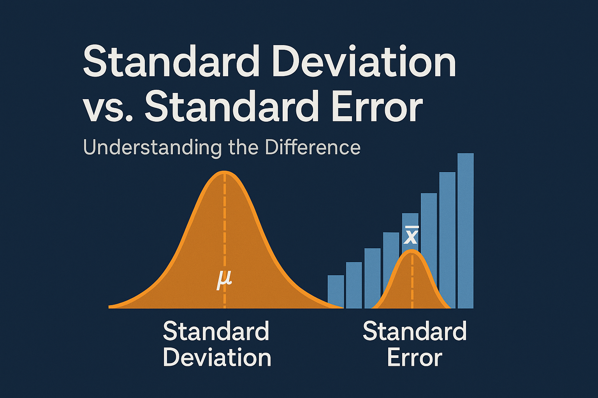
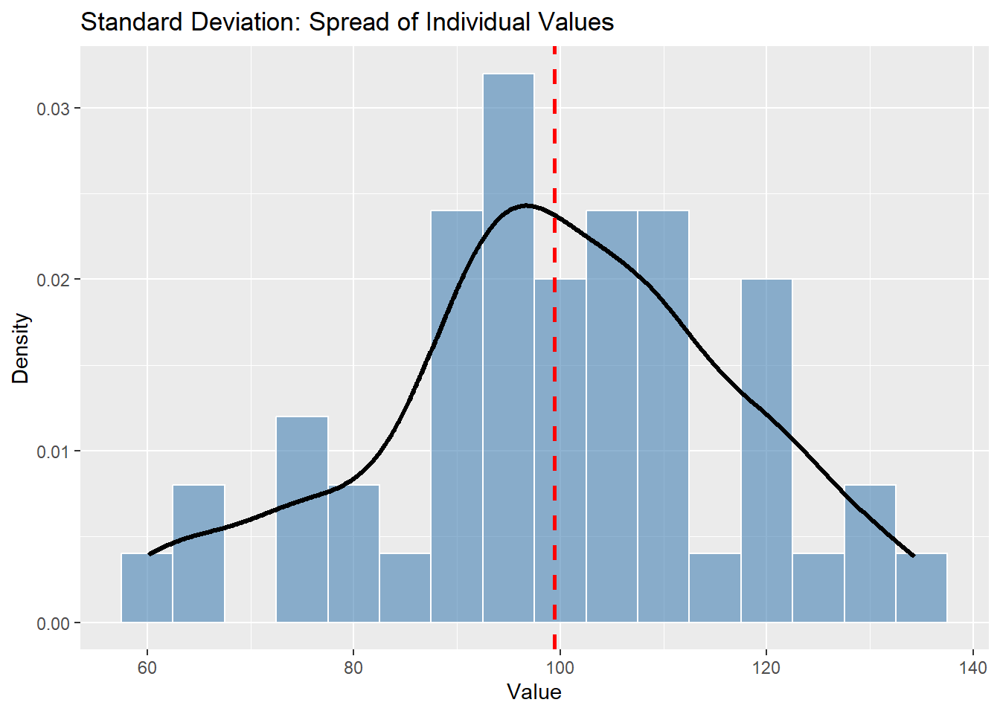
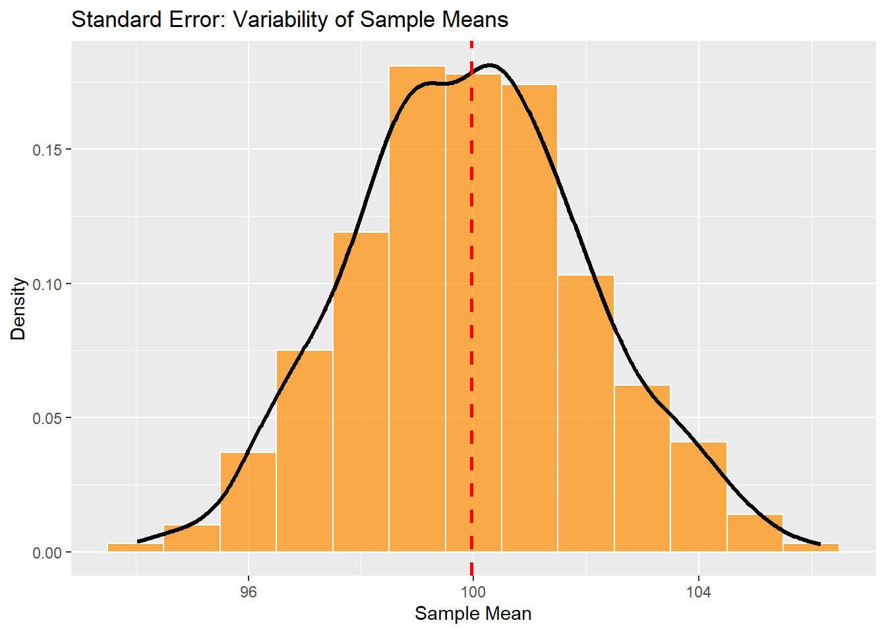
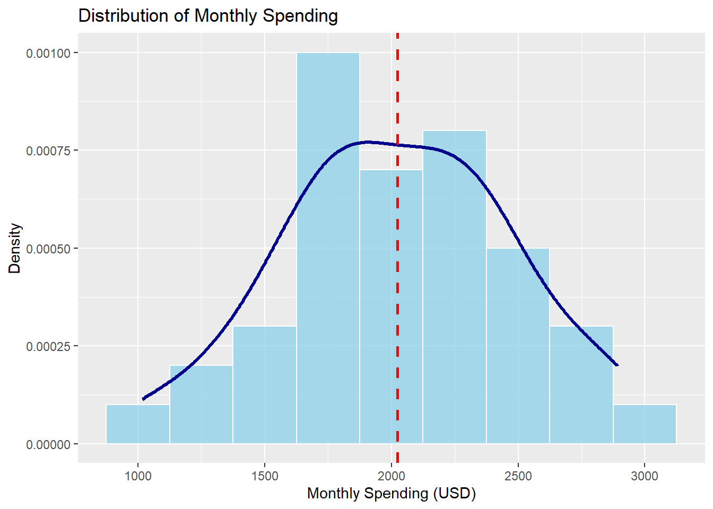

set.seed(42)
sample_data <- rnorm(50, mean = 100, sd = 15)
1 Introduction: Why This Confusion Still Matters
In the world of data analysis and statistics, standard deviation (SD) and standard error (SE) are two concepts that are often misunderstood or—worse—used interchangeably. This confusion isn’t just academic: misinterpreting these two measures can lead to poor conclusions, misleading visualizations, and incorrect inferences, especially in reports intended for non-technical audiences.
Think about this: you read a news article stating that “the average income of a sample group is $3,000 with a standard error of $500.” But then another article says “the same average income with a standard deviation of $500.” Should your level of confidence change? Absolutely—because they tell two fundamentally different stories.
This article aims to:
- Define and differentiate standard deviation and standard error,
- Explore their mathematical foundations,
- Demonstrate their practical implications with real R code and visuals,
- Warn about common pitfalls and interpretation mistakes.
By the end of this post, you’ll not only understand the difference but also know exactly when and why each metric matters.
2 Definitions and Mathematical Foundation
Understanding the difference between standard deviation and standard error requires going beyond surface-level definitions. While they are mathematically related, they answer fundamentally different questions.
2.1 Standard Deviation (SD)
Standard deviation is a measure of variability or dispersion within a single dataset. It tells us how far individual observations tend to deviate from the sample (or population) mean.
Mathematically, for a sample of size \(n\), the sample standard deviation is given by:
\[ s = \sqrt{ \frac{1}{n - 1} \sum_{i=1}^{n} (x_i - \bar{x})^2 } \]
Where:
- \(x_i\): Each data point
- \(\bar{x}\): Sample mean
- \(n\): Number of observations
Standard deviation is widely used in descriptive statistics to understand how spread out the values in a dataset are. A large SD implies high variability, while a small SD suggests the values are clustered closely around the mean.
📌 Use case: “How much do individual students’ test scores vary from the class average?”
2.2 Standard Error (SE)
Standard error, in contrast, is a measure of precision—specifically, the precision of an estimate like the sample mean. It tells us how much the sample mean would vary if we repeatedly drew samples from the population.
It is defined as:
\[ \text{SE} = \frac{s}{\sqrt{n}} \]
As you can see, SE is directly related to the standard deviation but scaled down by the square root of the sample size. This reflects the idea that more data gives more precise estimates.
📌 Use case: “How much uncertainty is there in the sample mean as an estimate of the population mean?”
In short:
| Concept | Measures | Based on | Affected by Sample Size |
|---|---|---|---|
| Standard Deviation | Spread of individual data points | Individual observations | ❌ No |
| Standard Error | Uncertainty in the sample mean | Sampling distribution | ✅ Yes |
Understanding this distinction is critical for drawing correct conclusions—especially in inferential statistics, confidence intervals, and hypothesis testing.
3 Visualizing the Difference with R: Simulation and Interpretation
Let’s use R to visualize and truly understand the difference between standard deviation and standard error.
We’ll start by generating a single random sample from a known population and examining the spread of individual values. Then, we’ll simulate multiple samples to show how the sample means vary—and how that variation reflects the standard error.
3.1 Standard Deviation: Spread of Values Within a Sample
We generate 50 values from a normal distribution with a mean of 100 and a standard deviation of 15. This mimics a situation like measuring the heights, weights, or incomes of 50 individuals.
Let’s visualize how these values are distributed.
library(ggplot2)
ggplot(data.frame(x = sample_data), aes(x = x)) +
geom_histogram(aes(y = ..density..), binwidth = 5, fill = "steelblue", color = "white", alpha = 0.6) +
geom_density(color = "black", linewidth = 1.2, linetype = "solid") +
geom_vline(aes(xintercept = mean(x)), color = "red", linetype = "dashed", linewidth = 1) +
labs(
title = "Standard Deviation: Spread of Individual Values",
x = "Value", y = "Density"
)
What This Graph Shows
The histogram shows the distribution of raw data from our single sample.
The black curve is a kernel density estimate, giving us a smooth representation of the distribution.
The red dashed line marks the sample mean.
The spread around this mean—the “thickness” of the histogram—is what the standard deviation quantifies.
So, in simple terms: standard deviation tells us how much individual values differ from their mean in one sample. It answers the question:
“Are most values close to the average, or are they all over the place?”
3.2 Standard Error: Spread of Sample Means Across Repeated Samples
Now let’s go one level deeper. Instead of looking at one sample, let’s imagine we repeatedly draw many samples from the same population, each of size 50, and record their means.
sample_means <- replicate(1000, mean(rnorm(50, mean = 100, sd = 15)))Let’s see how those means are distributed:
ggplot(data.frame(mean = sample_means), aes(x = mean)) +
geom_histogram(aes(y = ..density..), binwidth = 1, fill = "darkorange", color = "white", alpha = 0.7) +
geom_density(color = "black", linewidth = 1.2, linetype = "solid") +
geom_vline(aes(xintercept = mean(mean)), color = "red", linetype = "dashed", linewidth = 1) +
labs(
title = "Standard Error: Variability of Sample Means",
x = "Sample Mean", y = "Density"
)
What This Graph Shows
Each bar in the histogram represents the frequency of sample means in a small range.
The curve again shows the estimated density of the sample means.
The red dashed line is the grand mean of all 1,000 sample means—it should be close to 100.
Unlike the previous graph, here we don’t see individual values but mean values from many samples.
This distribution is known as the sampling distribution of the sample mean.
And the standard deviation of this distribution is the standard error:
se_estimate <- sd(sample_means)
se_estimate[1] 2.1139433.3 Interpretation: Two Types of Spread, Two Different Questions
Let’s pause and reflect on what we’ve seen so far.
Although standard deviation and standard error are both measures of “spread,” they describe very different things, answer different questions, and are used in different contexts.
| Concept | What it Measures | Based on… | Changes with Sample Size (\(n\)) |
|---|---|---|---|
| Standard Deviation | Spread of individual data values | Single sample | ❌ No |
| Standard Error | Spread of sample means across repeated samples | Sampling distribution | ✅ Yes |
3.3.1 Summary of Interpretation
Standard deviation (SD) tells us:
> “How much do individual values differ from the average within a sample?”Standard error (SE) tells us:
> “How much would the sample average vary if we repeated the sampling?”
In other words:
- SD measures natural variability among individuals (or observations).
- SE measures the statistical uncertainty of an estimate, usually the sample mean.
This difference is not just semantic—it has critical consequences for data interpretation:
- You use SD when describing the spread of your sample or population.
- You use SE when making inferences, estimating confidence intervals, or assessing how trustworthy your sample statistic is.
3.3.2 The Mathematical Connection
As we saw earlier, the standard error is mathematically derived from the standard deviation:
\[ \text{SE} = \frac{s}{\sqrt{n}} \]
This formula reveals a fundamental principle in statistics:
- The more data you collect (larger \(n\)), the more stable your sample mean becomes.
- However, the variability within the sample (standard deviation \(s\)) may remain roughly the same—because it depends on the population, not on how many observations you took.
🧠 Key insight:
Standard deviation reflects the reality of your data.
Standard error reflects your uncertainty about the mean.
4 Common Mistakes and Misinterpretations
Despite their differences, standard deviation and standard error are frequently confused—even in academic papers, business reports, and media articles. Below are some of the most common mistakes and why they matter.
4.1 Mistake 1: Using Standard Error Instead of Standard Deviation in Descriptive Summaries
A classic mistake is reporting the standard error when trying to describe how spread out individual values are.
❌ “The average score was 80 ± 2 (SE)”
✅ “The average score was 80 ± 2 (SD)”
In descriptive statistics—such as reporting the results of a survey, an experiment, or a class performance—you almost always want to use the standard deviation, because it reflects individual variability.
📌 The standard error, by contrast, only makes sense if your goal is to communicate how uncertain your estimate of the mean is, not how diverse the sample is.
4.2 Mistake 2: Adding Error Bars to a Barplot Without Clarifying Whether It’s SD or SE
Barplots with error bars are everywhere—but often, those bars are unlabeled, or worse, mislabeled.
- If the error bars are standard deviation, they show the range of variation in the data.
- If they are standard error, they show the precision of the mean estimate.
Yet many charts leave this ambiguous or assume the reader will infer it.
✏️ Always label your error bars. In R and ggplot2, you can add
labs(caption = "Error bars represent ±1 SE")to avoid confusion.
4.3 Mistake 3: Believing That SE Can Describe the Sample’s Spread
Another subtle misinterpretation is thinking that a small SE implies the data itself is tightly clustered. But SE has nothing to do with spread among individual values.
A sample can have high variability (large SD), but still have a small SE if the sample size is large.
This is especially misleading in clinical trials or public health studies, where the sample size might be very large—but individual responses vary wildly.
📉 Low SE ≠ Low diversity. It just means you’re confident about the average.
4.4 Mistake 4: Reporting SE Without Context
It’s not uncommon to see a mean value with a standard error reported like this:
“Mean blood pressure: 132 ± 1.5”
This may seem informative—but without knowing the sample size, this value has limited meaning.
Why? Because SE is dependent on \(n\). A standard error of 1.5 from 10 observations is very different from the same SE based on 10,000 observations.
✔️ Always include the sample size and preferably also the standard deviation, especially if the goal is transparency and reproducibility.
4.5 Final Rule of Thumb
| If you want to… | Use… |
|---|---|
| Describe how individuals vary | Standard Deviation |
| Quantify uncertainty about the sample mean | Standard Error |
| Construct a confidence interval | Standard Error |
| Show variability in raw data | Standard Deviation |
By respecting the purpose and proper use of these two measures, you’ll avoid misleading your audience—and build more trust in your analyses.
5 A Real-World Example: Monthly Spending Survey in USD
Let’s now apply what we’ve learned in a more realistic, international scenario.
Imagine a survey conducted in a mid-sized city where 40 individuals are asked:
“How much money do you spend per month (in US Dollars)?”
We simulate responses centered around $2,000, with a standard deviation of $500.
set.seed(123)
n <- 40
monthly_spending <- round(rnorm(n, mean = 2000, sd = 500), 0)
head(monthly_spending)[1] 1720 1885 2779 2035 2065 28585.1 Descriptive Statistics
Now let’s compute the mean, standard deviation, and standard error:
mean_spending <- mean(monthly_spending)
sd_spending <- sd(monthly_spending)
se_spending <- sd_spending / sqrt(n)
mean_spending[1] 2022.6sd_spending[1] 448.8549se_spending[1] 70.9702Let’s interpret the output:
Mean monthly spending: approximately 2023 USD
Standard deviation: approximately 449 USD
Standard error: approximately 71 USD
5.2 What Do These Numbers Tell Us?
The standard deviation tells us that individual spending varies by about 449 USD from the average. So one person may spend only around 1574 USD, while another spends over 2471 USD.
The standard error tells us that the average we see in this sample could fluctuate by about ±71 USD due to sampling variability.
📌 While individuals differ significantly in spending habits, the sample mean is relatively stable thanks to a sufficient sample size \(n =\) 40
5.3 Visualizing the Distribution
library(ggplot2)
ggplot(data.frame(spending = monthly_spending), aes(x = spending)) +
geom_histogram(aes(y = ..density..), binwidth = 250, fill = "skyblue", color = "white", alpha = 0.7) +
geom_density(color = "darkblue", linewidth = 1.2) +
geom_vline(aes(xintercept = mean_spending), color = "red", linetype = "dashed", linewidth = 1) +
labs(
title = "Distribution of Monthly Spending",
x = "Monthly Spending (USD)", y = "Density"
)
This graph shows:
The red dashed line is the sample mean 2023 USD
The width of the histogram and smooth curve represents the variability in spending.
This is captured by the standard deviation, not the standard error.
5.4 Confidence Interval for the Mean
Let’s calculate a 95% confidence interval using the standard error:
lower <- mean_spending - 1.96 * se_spending
upper <- mean_spending + 1.96 * se_spending
c(lower, upper)[1] 1883.498 2161.702Result:
Confidence interval: approximately 1883 to 2162 USD
This tells us:
“We are 95% confident that the true average monthly spending of the population lies between 1883 and 2162 USD.”
Remember: this range reflects uncertainty about the mean, not individual variability.
6 Conclusion
Standard deviation and standard error are often mentioned in the same breath, but they serve very different purposes in data analysis and statistical reasoning.
- Standard deviation reflects the natural variability in a dataset. It tells us how different individuals are from one another.
- Standard error quantifies the precision of a sample estimate, such as the mean. It tells us how much we can trust our estimate of the population parameter.
While they are mathematically related, confusing one for the other can lead to serious misinterpretations—especially in scientific communication, data journalism, or policymaking.
Here are some final takeaways:
- Use standard deviation when describing the data you have.
- Use standard error when making inferences about the population from your sample.
- Always label your charts and error bars clearly, and report sample size to give proper context.
- Don’t mistake low standard error for low variability—it only means your estimate is more precise, not that your data is more uniform.
🎯 In short:
Standard deviation tells you about your data.
Standard error tells you how much you can trust your mean.
Understanding this distinction is more than just a statistical nuance—it’s a sign of analytical maturity.
7 References
James, G., Witten, D., Hastie, T., & Tibshirani, R. (2021). An Introduction to Statistical Learning with Applications in R. Springer. https://www.statlearning.com
Moore, D. S., McCabe, G. P., & Craig, B. A. (2017). Introduction to the Practice of Statistics. W.H. Freeman.
R Core Team. (2024). R: A language and environment for statistical computing. R Foundation for Statistical Computing. https://www.r-project.org
Wickham, H., Çetinkaya-Rundel, M., & Grolemund, G. (2023). R for Data Science (2e). https://r4ds.hadley.nz
Navarro, D. (2019). Learning Statistics with R: A tutorial for psychology students and other beginners. https://learningstatisticswithr.com